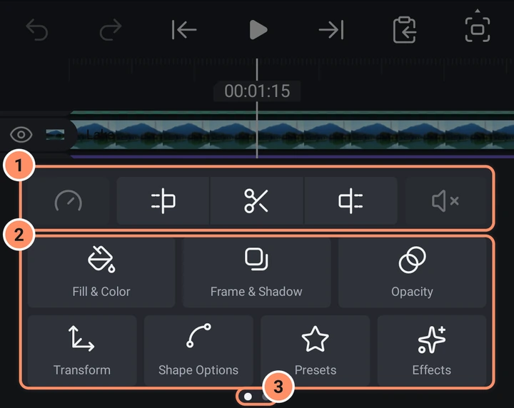
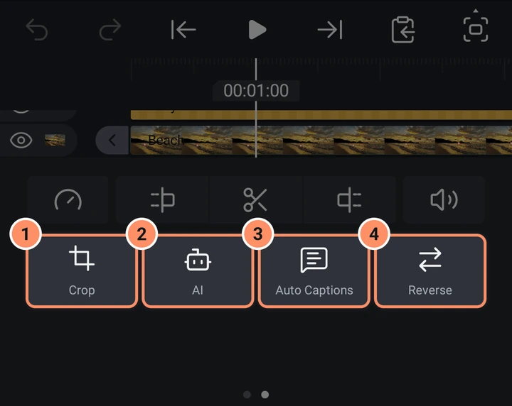
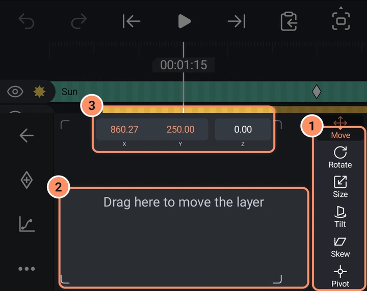
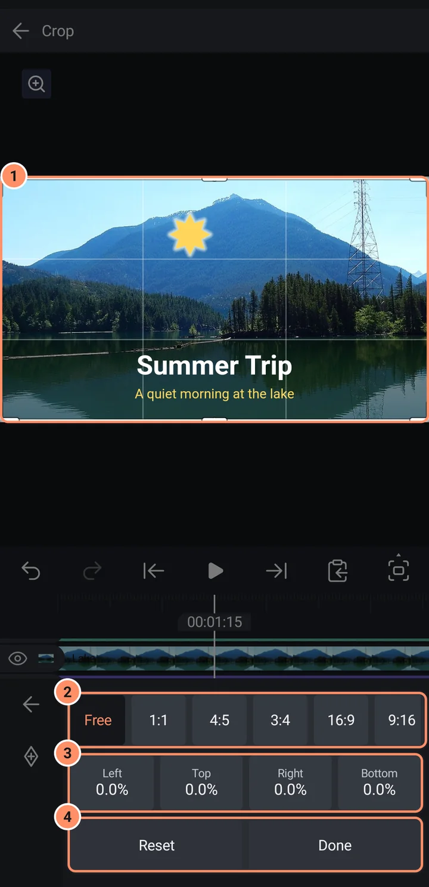
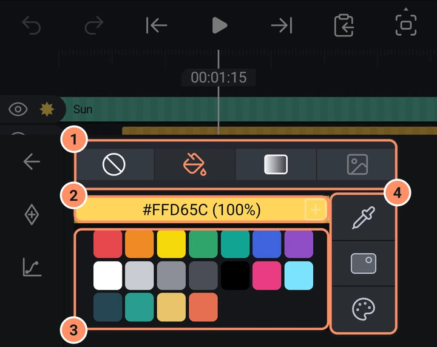

Laagtools
Het raster met tools dat verschijnt als je een laag selecteert, en elk paneel daarachter.
Tik op een laag en onderin opent een raster met tools. De eerste rij heeft vijf kleine knoppen (snelheid, bijsnijden en splitsen, volume); die staan beschreven in De tijdlijn. Een knop om bij te snijden of te verlengen die op de plek van de afspeelkop niet werkt, zie je helemaal niet. Daaronder staan grote knoppen; welke dat zijn, hangt af van het soort laag.
De grote knoppen staan verdeeld over twee pagina's. Veeg zijwaarts over het raster om van de ene naar de andere pagina te gaan; twee puntjes eronder laten zien op welke pagina je bent. Heeft een laag maar één pagina, dan zie je geen puntjes. Op een grote tablet staan de tools in de kolom naast het voorbeeld, allemaal op één pagina, in twee tot vier kolommen zodat ze passen.

| Laag | Tools |
|---|---|
| Vorm, foto, video | Vulling en kleur, Rand en schaduw, Dekking, Transformeren, Vormopties, Voorinstellingen, Effecten |
| Padvorm (pen, SVG, veel vormen) | Hetzelfde, met Punten bewerken in plaats van Vormopties |
| Tekst | Hetzelfde, met Tekst bewerken in plaats van Vormopties |
| Tekening | Hetzelfde, met Tekening bewerken in plaats van Vormopties |
| Groep | Vulling en kleur, Rand en schaduw, Dekking, Frame, Transformeren, Groep bewerken, Voorinstellingen, Effecten. Een groep die aan een asset gekoppeld is, heeft Asseteigenschappen in plaats van Groep bewerken; een video-uitsnede gemaakt met Achtergrond verwijderen (video) heeft in plaats daarvan Uitsnederand en geen Frame |
| Null | Transformeren, Voorinstellingen, Effecten |
| Camera | Camera-opties, Transformeren, Effecten, Voorinstellingen, Camerabewegingen |
| 3D-model | Modelopties, Dekking, Transformeren, Voorinstellingen, Effecten |
| Licht | Lichtopties, Transformeren |
| Audio | Voorinstellingen, Effecten (ook Stemfilters), Beats markeren, AI (Ruis verminderen en Automatische ondertitels) |
Een foto of video is een rechthoek met een afbeelding als vulling, dus die heeft dezelfde tools als een vorm.
De tabel toont pagina 1. Op pagina 2 staat Uitsnijden voor elke zichtbare laag behalve een 3D-model: vormen, tekst, tekeningen, groepen, foto's en video's. Een videoclip heeft daar nog vier knoppen: AI, Automatische ondertitels, Omkeren en Screenshot; een foto heeft daar ook AI. Staat Dieptevolgorde van het project aan, dan begint pagina 2 ook met 3D-laag voor vormen, foto's, video's, tekst, tekeningen en groepen: zie Cameralagen en 3D. Audio-, camera-, licht-, null- en 3D-modellagen hebben maar één pagina.

Elk paneel
De meeste panelen delen links een smalle kolom met deze knoppen: Terug, Keyframe toevoegen of Keyframe verwijderen, Easing en, alleen in Transformeren en Effecten, Meer. Is de keyframeknop grijs, dan kun je die instelling niet animeren. Zie Keyframes en easing.
Dubbeltik op een getalvak (dubbelklik op een computer) om het numerieke toetsenblok te openen; met één tik selecteer je alleen de waarde die de liniaal of het trackpad aanpast. In het toetsenblok is de hele waarde al geselecteerd, dus wat je typt vervangt die. Met het vinkje pas je de waarde toe; tik ernaast om het toetsenblok te sluiten. Een liniaal (een strook met streepjes en een naald in het midden) verandert een getal als je zijwaarts sleept.
Transformeren
Tabbladen rechts: Verplaatsen, Draaien, Grootte, Scheeftrekken. Het draaipunt zit in Verplaatsen en de 3D-rotatie in Draaien. Voor een camera werken alleen Verplaatsen, Draaien en Grootte; Scheeftrekken is grijs. Op een computer zijn de tabbladen Verplaatsen, Draaien, Grootte, Kantelen, Scheeftrekken en Draaipunt: houd Transformeren in de tools ingedrukt, of open Meer, om te wisselen tussen Basisbediening (Verplaatsen, Draaien, Grootte en Scheeftrekken, de standaard) en Geavanceerde bediening (alle zes tabbladen).
- Verplaatsen. Een trackpad ("Sleep hier om de laag te verplaatsen") en vakken voor X en Y. Tik op Z om de laag langs de diepte-as te verplaatsen. Dunne rode hulplijnen verschijnen als de laag uitlijnt met het canvas of met een andere laag. Dubbeltik op het trackpad om in plaats daarvan het Draaipunt te verplaatsen: op het tabblad staat dan Draaipunt, en met een dubbeltik ga je terug. Ook in Meer vind je Draaipunt.
- Draaien. Een draaiknop: sleep het knopje rond of dubbeltik op de graden om ze te typen. Zet 3D-rotatie aan in Meer om de laag om X, Y en Z te draaien: één liniaal per as, of met Vrij draaien in Meer een trackpad waarop je met één vinger kantelt en met twee vingers draait. Een laag die al gekanteld is, en een 3D-object, laat altijd de 3D-rotatie zien; met 3D-rotatie resetten maak je hem weer plat.
- Grootte. Vakken voor breedte en hoogte en een knop Koppelen (standaard aan) die de verhoudingen gelijk houdt. Voor een camera verandert dit tabblad de kijkhoek. De koppeling wordt per laag onthouden en met het project opgeslagen, en de liniaal glijdt nog even door als je snel veegt.
- Kantelen (op een computer). X-ROTATIE en Y-ROTATIE in graden, voor 3D-kanteling. Zie Cameralagen en 3D.
- Scheeftrekken. X-SCHEEF en Y-SCHEEF in graden.
- Draaipunt (dubbeltik op Verplaatsen; op een computer het tabblad Draaipunt). Het punt waar de laag omheen draait en schaalt, in pixels vanaf het midden van de laag. Typ X en Y, sleep over het trackpad, tik op een van de negen vierkantjes voor een hoek, een zijkant of het midden, of sleep de markering op het canvas. De laag en zijn onderliggende lagen blijven waar ze zijn.
- Meer heeft Positie resetten, Rotatie resetten, Schaal resetten, 3D-rotatie resetten, Scheeftrekken resetten, Draaipunt resetten en Transformatie resetten (alle zes), en op een telefoon of tablet ook Draaipunt, 3D-rotatie en Vrij draaien.

Verplaatsen is de positie: X, Y en Z worden samen geanimeerd. Draaien, Grootte, 3D-rotatie, Scheeftrekken en Draaipunt hebben elk hun eigen keyframes (X en Y van de 3D-rotatie delen hun keyframes, Z is de gewone rotatie); breedte en hoogte delen de keyframes van Grootte.
Uitsnijden
Foto's, video's en de andere zichtbare lagen hebben een knop Uitsnijden op pagina 2 van het toolraster. Het deel van de laag dat wegvalt wordt donkerder, en je ziet een kader met acht grepen: sleep een hoek of zijkant om uit te snijden, of sleep binnen het kader om het te verplaatsen. Met twee vingers kun je nog steeds op het canvas zoomen. Vrij, 1:1, 4:5, 3:4, 16:9 en 9:16 maken de grootst mogelijke gecentreerde uitsnede in die verhouding en houden die verhouding vast terwijl je sleept. Dubbeltik op een zijkant om de waarde te typen, Resetten haalt de uitsnede weg en Klaar sluit het paneel. De keyframeknop zet een keyframe op alle vier de zijden tegelijk. De uitsnede is het effect Uitsnijden, dus je kunt hem ook in Effecten aanpassen, met Ronding en Zachte rand; de laag blijft waar hij is.

Vulling en kleur
Tabbladen bovenaan: Geen, Kleur, Verloop, Media.
- Kleur. De kleuren van het gekozen palet (het palet Standaard heeft er veertien), daarna je opgeslagen kleuren. De balk bovenaan toont de naam van het palet, waarmee je je paletten opent, en de kleur als #RRGGBB met de dekking; met de + erop sla je de huidige kleur op. Drie knoppen: Pipet (raak het voorbeeld aan om een kleur over te nemen), Kleurschuifregelaars en Volledige kleurkiezer (een kleurenwiel of HSV- en RGB-schuifregelaars met een hexveld).
- Verloop. Kies lineair, radiaal of rondgaand, en daarna een begin- en een eindkleur. Met twee grepen op het voorbeeld verplaats je het verloop. Een verloop heeft precies twee kleuren.
- Media. Vult de vorm of de letters van een tekstlaag met een foto of video. Tik erop en de kiezer opent.

Alleen de kleur in het tabblad Kleur kan keyframes krijgen.
Kleurpaletten
Een palet is een set kleuren die je in elk project kunt gebruiken. De kleurbalk in Vulling en kleur, de Volledige kleurkiezer en de kleurpop-up van een effectinstelling tonen de kleuren van het gekozen palet. Tik daar op de naam van het palet om Paletten te openen.
- Tik op een palet om het te gebruiken. Met het potlood open je het om te bewerken.
- Nieuw maakt een palet met de kleur die je nu hebt. Uit afbeelding maakt er een met de 8 hoofdkleuren van een foto; een paletafbeelding die je uit AbsentMotion hebt geëxporteerd, komt terug met al zijn kleuren. Uit bestand leest een paletbestand: GIMP
.gpl, Adobe.aseof.act,.pal, of een lijst met hexkleuren, zoals de paletten die je bij Lospec kunt downloaden. - Tik in een geopend palet op de naam om die te wijzigen, en op Gebruiken om het palet te kiezen. Tik op een kleur om die te selecteren: Toevoegen voegt de kleur toe die je nu hebt, Dupliceren kopieert de geselecteerde kleur en Verwijderen haalt hem weg. Sorteren zet de kleuren op volgorde van Kleurtoon, Lichtheid of Verzadiging.
- Exporteren slaat het palet op als Afbeelding (PNG) in Pictures/AbsentMotion, of als GIMP-palet (.gpl) of Adobe-stalen (.ase) in Documents/AbsentMotion. Kopie maken maakt een kopie die je kunt bewerken, en Palet verwijderen verwijdert het palet nadat je het hebt bevestigd.
- Vergrendelen zorgt dat er geen kleuren worden toegevoegd, gedupliceerd of verwijderd tot je het weer uitzet.
Er zijn acht ingebouwde paletten: Standaard, Pastel, Neon, Aardetinten, Huidtinten, Grijstinten, PICO-8 en Game Boy. Die blijven altijd vergrendeld: gebruik Kopie maken om er een aan te passen. Is een ingebouwd palet gekozen, dan staan je opgeslagen kleuren na de kleuren van het palet en slaat de + daar op. Is een van je eigen paletten gekozen, dan voegt de + de kleur aan dat palet toe, tenzij het vergrendeld is.
Sleep op een computer een .gpl-, .ase-, .act- of .pal-bestand naar het venster: het komt bij je paletten en wordt het gekozen palet. Je paletten gaan mee in back-ups: zie Projecten, back-up en importeren.
Rand en schaduw
Drie tabbladen: Lijn, Rand en Schaduw.
- Lijn is de omtrek van de vorm. Je hebt een schakelaar, een kleur, een dikte, de vorm van lijnuiteinden en hoeken, en een stijl voor elk uiteinde van een open lijn (pijlen, cirkels, ruiten en meer).
- Met Rand stapel je zoveel randen als je wilt. Elke rand heeft een dikte, een kleur en een positie (BINNEN, MIDDEN, BUITEN). Sleep aan de greep om de volgorde te veranderen. Rand toevoegen voegt er een toe.
- Schaduw heeft een schakelaar, Kleur, Grootte, Alfa en Positie (X en Y).
Dekking
Een schuifregelaar voor Dekking met een vak voor het percentage, en 28 overvloeimodi in zeven groepen: Normaal; Donkerder (Vermenigvuldigen, Donkerder, Donkerdere kleur, Kleur doordrukken, Lineair doordrukken); Lichter (Bleken, Lichter, Lichtere kleur, Kleur tegenhouden, Lineair tegenhouden); Contrast (Bedekken, Zacht licht, Fel licht, Zacht bedekken, Levendig licht, Lineair licht, Puntlicht); Verschil (Verschil, Uitsluiting, Aftrekken, Delen); Kleur (Kleurtoon, Verzadiging, Kleur, Luminantie); en Masker (Masker, Uitsluiten). Tik op een groep om die te openen en tik op een modus om die toe te passen. Masker laat wat eronder ligt alleen zien waar deze laag is; Uitsluiten haalt weg wat eronder ligt op de plek van deze laag.
Vormopties
De instellingen die de vorm bepalen, elk op een eigen rij met een liniaal en een waardevak. Een paar voorbeelden: een Cirkel heeft Grootte; een Afgeronde rechthoek heeft Grootte en Straal; een Veelhoek heeft Zijden, Straal en Hoek; een Ster heeft Punten, Buitenstraal, Binnenstraal en Hoek; een Pijl heeft Begin, Einde, Staartbreedte, Kopbreedte en Koplengte. De keyframeknop animeert de geselecteerde rij. Foto's en video's gebruiken hier Grootte.
Punten bewerken, Tekening bewerken, Tekst bewerken
Deze openen een editor op volledig scherm: zie Vormen, tekenen en maskers en Tekst en lettertypen.
Groep bewerken
Opent de groep: de tijdlijn en het voorbeeld tonen dan alleen de lagen erin, zodat je die kunt aanpassen. Zie Vormen, tekenen en maskers.
Frame
Groepen en assets hebben een knop Frame. Daarmee kies je welk frame van de eigen tijdlijn van de groep je ziet, bijvoorbeeld om te wisselen tussen de monden of ogen van een personage, net als de Frame Picker in Adobe Animate.
- Vorig frame en Volgend frame gaan één frame terug of vooruit. Na het laatste frame komt weer het eerste.
- Het vak ertussen toont het frame en het aantal frames, bijvoorbeeld 3 / 12. Dubbeltik erop om een framenummer te typen.
- Zonder keyframes zie je het gekozen frame in de hele clip. Met de keyframeknop zet je er een keyframe op, en zodra er keyframes zijn, komt er een keyframe bij als je op een ander moment een frame kiest. Elk keyframe houdt zijn frame vast tot het volgende keyframe. Kies een andere easing voor een keyframe om in plaats daarvan door de frames ertussen te tellen.
- Uit verwijdert het gekozen frame en de keyframes ervan, zodat de groep weer zijn eigen tijdlijn afspeelt. Deze knop zie je alleen als er een frame gekozen is.
Zolang je geen frame kiest, toont het vak in een vagere kleur het frame dat op de afspeelkop speelt.
Camera-opties, Lichtopties en Modelopties
Zie Cameralagen en 3D.
Beats markeren
Op een audiolaag zet Beats markeren een bladwijzer op elke beat van het geluid. Het doet hetzelfde als Beats markeren in het laagmenu: zie Audio.
Volume
Voor geluid en voor video's. Zie Audio.
AI, Automatische ondertitels, Omkeren en Screenshot
Deze vier knoppen staan op pagina 2 van het raster van een videoclip (een GIF telt als video). AI opent de categorie AI van de Effectenbibliotheek; een foto heeft die knop ook op pagina 2 (voor Achtergrond verwijderen), en een audiolaag heeft dezelfde knop op zijn enige pagina. Automatische ondertitels maakt ondertitels voor alleen deze clip: zie AI-tools. Omkeren speelt de clip achterstevoren af: zie Media.
Screenshot slaat het frame van de clip onder de afspeelkop op als afbeelding, op de volledige eigen grootte van de clip. Je krijgt het kale beeld: effecten, uitsnede, randen en de positie van de laag tellen niet mee, maar bijsnijden, snelheidswijzigingen en Omkeren wel. De afbeelding komt in de galerij van je telefoon (Pictures/AbsentMotion) en wordt als nieuwe laag boven de clip aan het project toegevoegd. Verwijder je die nieuwe laag binnen 10 seconden, dan verdwijnt de afbeelding ook uit de galerij. De afspeelkop moet op de clip staan.
Effecten en voorinstellingen
Zie Effecten gebruiken en Assets, sjablonen en voorinstellingen.